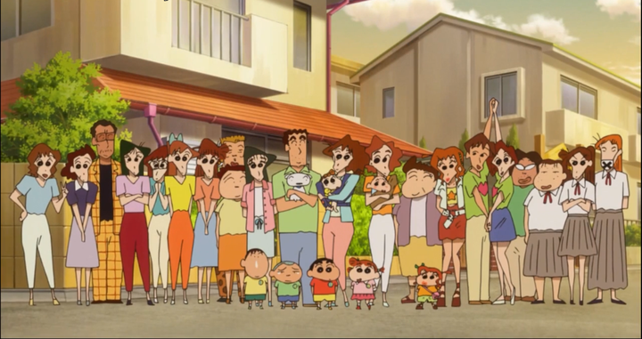

剧情简介
故事舞台是在日本埼玉县春日部市，一位正在“双叶幼稚园”学习的五岁小孩野原新之助（小新），在日常生活中发生的事，日子频繁琐碎却不乏温馨感动。
起初，小新与父亲野原广志和母亲野原美冴（娘家姓：小山）组成一个3人家庭，从小房子搬入两层楼平房。随着故事发展，家中添加了一只被遗弃的小狗“野原小白（小白）”与妹妹“野原向日葵（小葵）”。车子也换了两次（前两台都是被美冴撞毁的）。
家里一度因为被气爆炸毁而暂时搬入鸡飞狗跳庄（胯下痛公寓）一阵子，后来房屋修缮完毕，全家才搬回原住处。
有一阵子美冴的妹妹小山梦冴因为失业暂居野原家二楼，后来搬出去住在他们曾经住过的鸡飞狗跳庄，同时剧里登场的通讯工具逐渐从最初尚未有手机的年代转变成智能手机。
注：早期的动画版常把“春日部市”称为“春我部市”，在漫画单行本的第16卷也曾使用过“春我”二字，现已统一称为“春日部市”。 “双叶幼稚园”也被称为“动感幼稚园”。故事主角野原新之助的汉字写法有可能是“野原新之助”或“野原信之介”。

作品设定
故事发生于日本埼玉县春日部市，小新一家住在埼玉县春日部市郊区某住宅区一栋二层小平房。故事背景设定在上世纪九十代（主人公小新的出生日期为1987年5月5日），因此漫画中可以看到许多反映日本九十年代社会风情的元素，比如野原一家三口组成的中产阶级家庭，反映了当时主流的“核家庭（Nuclear Family）”现象。蜡笔小新家的邻居热情好客，具有人情味，例如被野原一家叫欧巴桑的北平，在野原家未搬到春日部的时候已在该区居住，在小新一家人搬往鸡飞狗跳庄暂住时负责照顾小白，为人八卦，爱探听野原一家或邻居的生活闲事，虽然如此，她却经常帮助野原家，是一个好邻居。
作品评价
《蜡笔小新》这部漫画以崎玉县春日部市的幼儿园儿童野原新之助为主人公，通过小新的“童言无忌”表达了社会百态与人世辛酸。（网易娱乐评）
《蜡笔小新》在日本及周边国家和地区迅速窜红不是偶然，其中一个重要的因素，就是通过一个不安世事的小孩不寻常的言行，说出了成人的想说却不敢说的话，做出了成人们想做却不敢做的事，释放了成人们的压力的心理活动，拨动了成年人渴望回归童年，回归自然，回归真实的心弦，引起了大多数观众的强烈共鸣。《蜡笔小新》不仅仅是一个动漫作品，而是一种文化现象，小新也不局限于剧中的角色，而是一个群体的思维。这种现象后面隐藏着该动漫片所折射出来的能够唤起大家共鸣的复杂成人心态至少包括：面对现实生活的深刻无奈、面对杂种文化呈现反传统思维、对他人习惯性，自私，虚伪与狡辩、直面隔代直系溺爱，影响未成年人教育的无助。（学者杜玲莉，杨小川评）
《蜡笔小新》中的动画音乐，将古今中外古典的、流行的、民族的、抑郁的音乐结合在一起，产生极大的化学反应，形成独特的视听效果，一段旋律作为整部动画音乐的一个要素，有着举足轻重的作用，除了整体自身风格外加上语言与音响的完美配合，这些声音元素让人耳目一新。《蜡笔小新》这部作品的动画音乐也非常符合大众口味，朗朗上口耳熟能详，很多观众听了几遍后就能哼唱。（学者王源评）